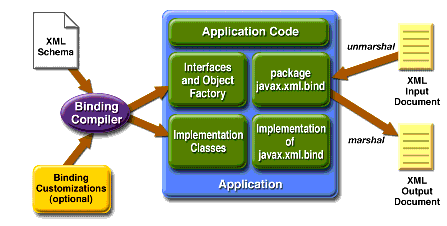
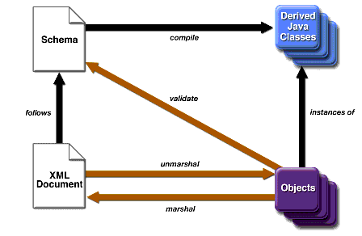

FAQ
History
Search
Feedback
|
Download
FAQ History |
|
API
Search Feedback |
JAXB Architecture
This section describes the components and interactions in the JAXB processing model. After providing a general overview, this section goes into more detail about core JAXB features. The topics in this section include:
Architectural Overview
Figure 1-1 shows the components that make up a JAXB implementation.

Figure 1-1 JAXB Architectural Overview
As shown in Figure 1-1, a JAXB implementation comprises the following eight core components.
The JAXB Binding Process
Figure 1-2 shows what occurs during the JAXB binding process.

Figure 1-2 Steps in the JAXB Binding Process
The general steps in the JAXB data binding process are:
- Generate classes. An XML schema is used as input to the JAXB binding compiler to generate JAXB classes based on that schema.
- Compile classes. All of the generated classes, source files, and application code must be compiled.
- Unmarshal. XML documents written according to the constraints in the source schema are unmarshalled by the JAXB binding framework. Note that JAXB also supports unmarshalling XML data from sources other than files/documents, such as DOM nodes, string buffers, SAX Sources, and so forth.
- Generate content tree. The unmarshalling process generates a content tree of data objects instantiated from the generated JAXB classes; this content tree represents the structure and content of the source XML documents.
- Validate (optional). The unmarshalling process optionally involves validation of the source XML documents before generating the content tree. Note that if you modify the content tree in Step 6, below, you can also use the JAXB Validate operation to validate the changes before marshalling the content back to an XML document.
- Process content. The client application can modify the XML data represented by the Java content tree by means of interfaces generated by the binding compiler.
- Marshal. The processed content tree is marshalled out to one or more XML output documents. The content may be validated before marshalling.
To summarize, using JAXB involves two discrete sets of activities:
These two steps are usually performed at separate times in two distinct phases. Typically, for example, there is an application development phase in which JAXB classes are generated and compiled, and a binding implementation is built, followed by a deployment phase in which the generated JAXB classes are used to process XML content in an ongoing "live" production setting.
Note: Unmarshalling is not the only means by which a content tree may be created. Schema-derived content classes also support the programmatic construction of content trees by direct invocation of the appropriate factory methods. Once created, a content tree may be revalidated, either in whole or in part, at any time. See Create Marshal Example for an example of using the
ObjectFactoryclass to directly add content to a content tree.
JAXB Binding Framework
The JAXB binding framework is implemented in three Java packages:
- The
javax.xml.bindpackage defines abstract classes and interfaces that are used directly with content classes.The
javax.xml.bindpackage defines theUnmarshaller,Validator, andMarshallerclasses, which are auxiliary objects for providing their respective operations.The
JAXBContextclass is the entry point for a Java application into the JAXB framework. AJAXBContextinstance manages the binding relationship between XML element names to Java content interfaces for a JAXB implementation to be used by the unmarshal, marshal and validation operations.The
javax.xml.bindpackage also defines a rich hierarchy of validation event and exception classes for use when marshalling or unmarshalling errors occur, when constraints are violated, and when other types of errors are detected.- The
javax.xml.bind.utilpackage contains utility classes that may be used by client applications to manage marshalling, unmarshalling, and validation events.- The
javax.xml.bind.helperpackage provides partial default implementations for some of the javax.xml.bind interfaces. Implementations of JAXB can extend these classes and implement the abstract methods. These APIs are not intended to be directly used by applications using JAXB architecture.The main package in the JAXB binding framework,
javax.bind.xml, is described in more detail below.More About javax.xml.bind
The three core functions provided by the primary binding framework package,
javax.xml.bind, are marshalling, unmarshalling, and validation. The main client entry point into the binding framework is theJAXBContextclass.
JAXBContextprovides an abstraction for managing the XML/Java binding information necessary to implement the unmarshal, marshal and validate operations. A client application obtains new instances of this class by means of thenewInstance(contextPath)method; for example:The
contextPathparameter contains a list of Java package names that contain schema-derived interfaces--specifically the interfaces generated by the JAXB binding compiler. The value of this parameter initializes theJAXBContextobject to enable management of the schema-derived interfaces. To this end, the JAXB provider implementation must supply an implementation class containing a method with the following signature:public static JAXBContext createContext( String contextPath, ClassLoader classLoader ) throws JAXBException;
Note: The JAXB provider implementation must generate a
jaxb.propertiesfile in each package containing schema-derived classes. This property file must contain a property namedjavax.xml.bind.context.factorywhose value is the name of the class that implements thecreateContextAPI.
The class supplied by the provider does not have to be assignable tojavax.xml.bind.JAXBContext, it simply has to provide a class that implements thecreateContextAPI. By allowing for multiple Java packages to be specified, theJAXBContextinstance allows for the management of multiple schemas at one time.
More About Unmarshalling
The
Unmarshallerclass in thejavax.xml.bindpackage provides the client application the ability to convert XML data into a tree of Java content objects. Theunmarshalmethod for a schema (within a namespace) allows for any global XML element declared in the schema to be unmarshalled as the root of an instance document. TheJAXBContextobject allows the merging of global elements across a set of schemas (listed in thecontextPath). Since each schema in the schema set can belong to distinct namespaces, the unification of schemas to an unmarshalling context should be namespace-independent. This means that a client application is able to unmarshal XML documents that are instances of any of the schemas listed in thecontextPath; for example:JAXBContext jc = JAXBContext.newInstance( "com.acme.foo:com.acme.bar" ); Unmarshaller u = jc.createUnmarshaller(); FooObject fooObj = (FooObject)u.unmarshal( new File( "foo.xml" ) ); // ok BarObject barObj = (BarObject)u.unmarshal( new File( "bar.xml" ) ); // ok BazObject bazObj = (BazObject)u.unmarshal( new File( "baz.xml" ) ); // error, "com.acme.baz" not in contextPathA client application may also generate Java content trees explicitly rather than unmarshalling existing XML data. To do so, the application needs to have access and knowledge about each of the schema-derived
ObjectFactoryclasses that exist in each of Java packages contained in thecontextPath. For each schema-derived Java class, there will be a static factory method that produces objects of that type. For example, assume that after compiling a schema, you have a packagecom.acme.foothat contains a schema-derived interface namedPurchaseOrder. To create objects of that type, the client application would use the following factory method:ObjectFactory objFactory = new ObjectFactory(); com.acme.foo.PurchaseOrder po = objFactory.createPurchaseOrder();
Note: Because multiple
ObjectFactoryclasses are generated when there are multiple packages on thecontextPath, if you have multiple packages on thecontextPath, you should use the complete package name when referencing anObjectFactoryclass in one of those packages.
Once the client application has an instance of the schema-derived object, it can use the mutator methods to set content on it.
Note: The JAXB provider implementation must generate a class in each package that contains all of the necessary object factory methods for that package named
ObjectFactoryas well as thenewInstance(javaContentInterface)method.
More About Marshalling
The
Marshallerclass in thejavax.xml.bindpackage provides the client application the ability to convert a Java content tree back into XML data. There is no difference between marshalling a content tree that is created manually using the factory methods and marshalling a content tree that is the result an unmarshal operation. Clients can marshal a Java content tree back to XML data to ajava.io.OutputStreamor ajava.io.Writer. The marshalling process can alternatively produce SAX2 event streams to a registeredContentHandleror produce a DOMNodeobject.A simple example that unmarshals an XML document and then marshals it back out is a follows:
JAXBContext jc = JAXBContext.newInstance( "com.acme.foo" ); // unmarshal from foo.xml Unmarshaller u = jc.createUnmarshaller(); FooObject fooObj = (FooObject)u.unmarshal( new File( "foo.xml" ) ); // marshal to System.out Marshaller m = jc.createMarshaller(); m.marshal( fooObj, System.out );By default, the
Marshalleruses UTF-8 encoding when generating XML data to ajava.io.OutputStreamor ajava.io.Writer. Use thesetPropertyAPI to change the output encoding used during these marshal operations. Client applications are expected to supply a valid character encoding name as defined in the W3C XML 1.0 Recommendation (http://www.w3.org/TR/2000/REC-xml-20001006#charencoding) and supported by your Java Platform.Client applications are not required to validate the Java content tree prior to calling one of the marshal APIs. There is also no requirement that the Java content tree be valid with respect to its original schema in order to marshal it back into XML data. Different JAXB Providers can support marshalling invalid Java content trees at varying levels, however all JAXB providers must be able to marshal a valid content tree back to XML data. A JAXB provider must throw a
MarshalExceptionwhen it is unable to complete the marshal operation due to invalid content. Some JAXB providers will fully allow marshalling invalid content, others will fail on the first validation error.Table 1-2 shows the properties that the
Marshallerclass supports.
More About Validation
The
Validatorclass in thejavax.xml.bindpackage is responsible for controlling the validation of content trees during runtime. When the unmarshalling process incorporates validation and it successfully completes without any validation errors, both the input document and the resulting content tree are guaranteed to be valid. By contrast, the marshalling process does not actually perform validation. If only validated content trees are marshalled, this guarantees that generated XML documents are always valid with respect to the source schema.Some XML parsers, like SAX and DOM, allow schema validation to be disabled, and there are cases in which you may want to disable schema validation to improve processing speed and/or to process documents containing invalid or incomplete content. JAXB supports these processing scenarios by means of the exception handling you choose implement in your JAXB-enabled application. In general, if a JAXB implementation cannot unambiguously complete unmarshalling or marshalling, it will terminate processing with an exception.
Note: The
Validatorclass is responsible for managing On-Demand Validation (see below). TheUnmarshallerclass is responsible for managing Unmarshal-Time Validation during the unmarshal operations. Although there is no formal method of enabling validation during the marshal operations, theMarshallermay detect errors, which will be reported to theValidationEventHandlerregistered on it.
A JAXB client can perform two types of validation:
- Unmarshal-Time validation enables a client application to receive information about validation errors and warnings detected while unmarshalling XML data into a Java content tree, and is completely orthogonal to the other types of validation. To enable or disable it, use the
Unmarshaller.setValidatingmethod. All JAXB Providers are required to support this operation.- On-Demand validation enables a client application to receive information about validation errors and warnings detected in the Java content tree. At any point, client applications can call the
Validator.validatemethod on the Java content tree (or any sub-tree of it). All JAXB Providers are required to support this operation.If the client application does not set an event handler on its
Validator,Unmarshaller, orMarshallerprior to calling the validate, unmarshal, or marshal methods, then a default event handler will receive notification of any errors or warnings encountered. The default event handler will cause the current operation to halt after encountering the first error or fatal error (but will attempt to continue after receiving warnings).There are three ways to handle events encountered during the unmarshal, validate, and marshal operations:
- Use the default event handler.
The default event handler will be used if you do not specify one via the
setEventHandlerAPIs onValidator,Unmarshaller, orMarshaller.- Implement and register a custom event handler.
Client applications that require sophisticated event processing can implement the
ValidationEventHandlerinterface and register it with theUnmarshallerand/orValidator.- Use the
ValidationEventCollectorutility.For convenience, a specialized event handler is provided that simply collects any
ValidationEventobjects created during the unmarshal, validate, and marshal operations and returns them to the client application as ajava.util.Collection.Validation events are handled differently, depending on how the client application is configured to process them. However, there are certain cases where a JAXB Provider indicates that it is no longer able to reliably detect and report errors. In these cases, the JAXB Provider will set the severity of the
ValidationEventtoFATAL_ERRORto indicate that the unmarshal, validate, or marshal operations should be terminated. The default event handler andValidationEventCollectorutility class must terminate processing after being notified of a fatal error. Client applications that supply their ownValidationEventHandlershould also terminate processing after being notified of a fatal error. If not, unexpected behavior may occur.
|
Download
FAQ History |
|
API
Search Feedback |
All of the material in The Java(TM) Web Services Tutorial is copyright-protected and may not be published in other works without express written permission from Sun Microsystems.